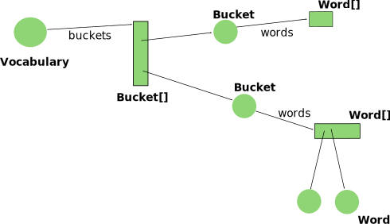

We will begin evolving our code, but we want to keep
the old and the new version, so that we can compare
our performance before and after.
So we are going to preserve the code we wrote in
the Java package word.count.step2.
We will code our optimized vocabulary in
the Java Package
word.count.step3, with a
new outline for the implementation of the class
Vocabulary.
The new design for the class
Vocabulary
adopts an array of buckets, each bucket being an array of words.
Look below at the outline of the bucket-based implementation
of the class Vocabulary:
public class Bucket {
private static final int NWORDS = 16;
private Word words[];
private int nwords;
Bucket() {
words = new Word[NWORDS];
...
}
public Word find(Word word) { ... }
public void add(Word word) { ... }
}
public class Vocabulary {
private static final int NBUCKETS = 256;
private Bucket buckets[];
private int nwords;
private int nadds;
public Vocabulary() {
buckets = new Bucket[NBUCKETS];
...
}
...
}
With this bucket-based implementation, a vocabulary object is really encapsulating a complex graph of objects:
Notice also how the implementation of the class Bucket uses the same implementation we used before: an array of words. Therefore, you can implement the class Bucket like you did the class Vocabulary earlier. In particular, you can reuse the code of the following methods:
The method find(Word) and the method add(Word) have pretty similar signatures and keep the same specification. It will be the same code that you had on the class Vocabulary in the Java package word.count.step2.
Last point before you can start implementing. When searching for a word in a bucket, remember to use the method equals(Word) on the class Word to compare two words. Again, we want to promote reuse and avoid recoding the same algorithms over and over.
Please make sure that you commit and push your work to our server.